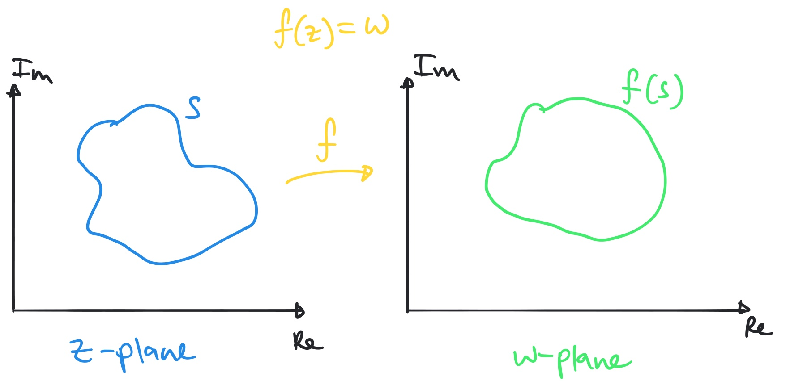
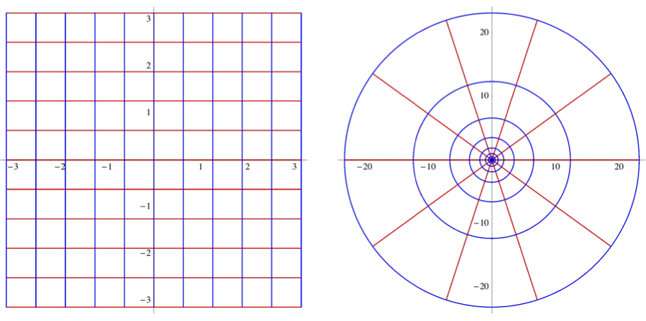
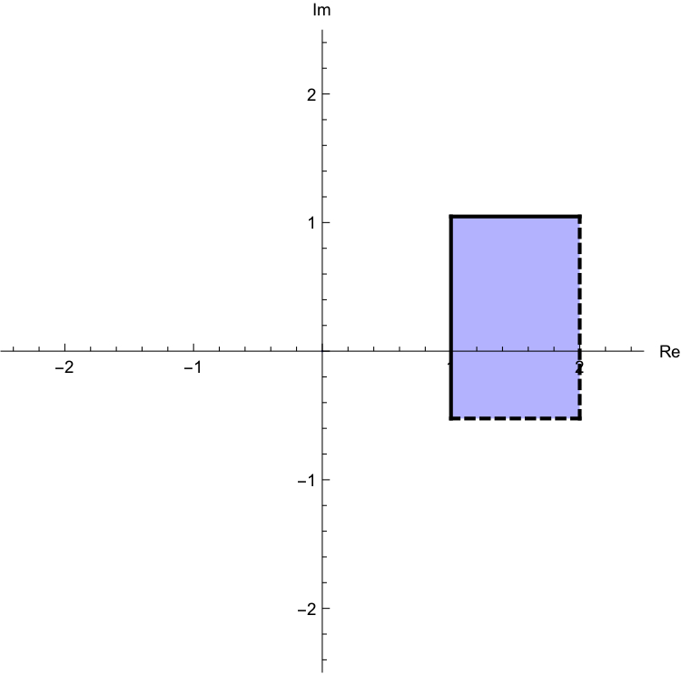
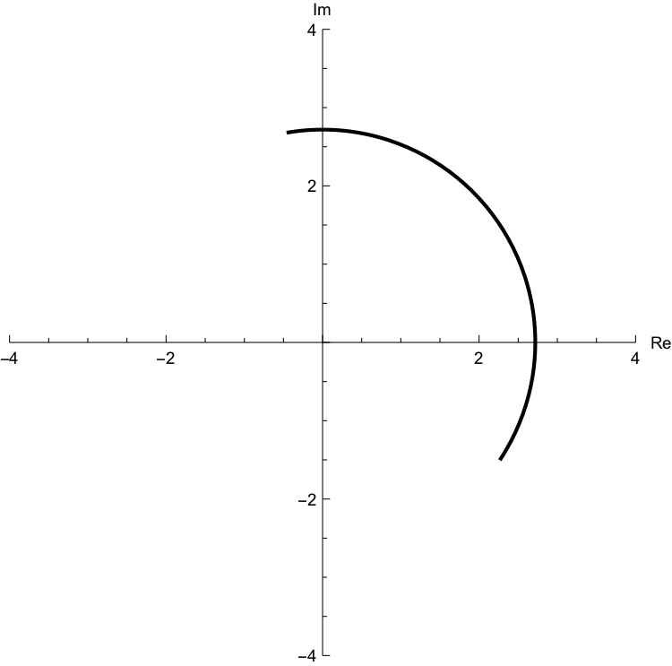
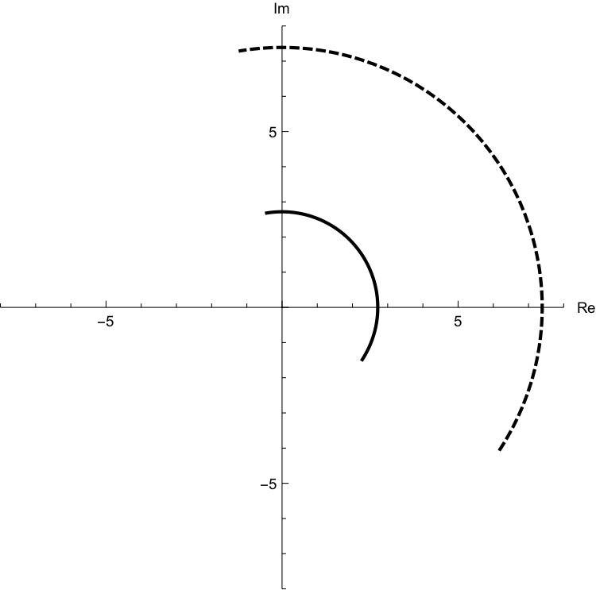
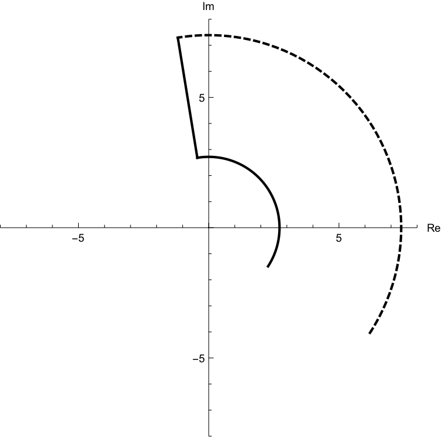
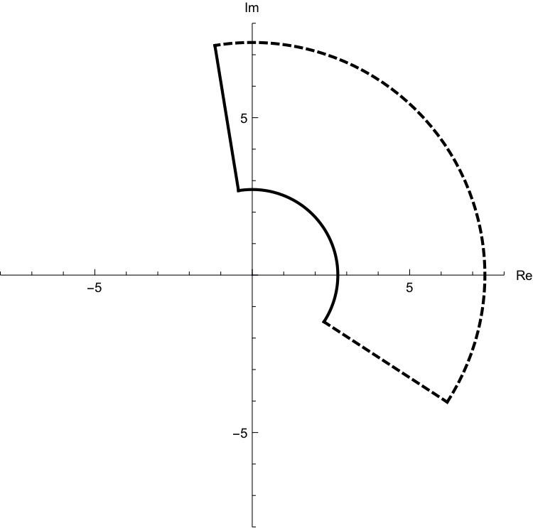
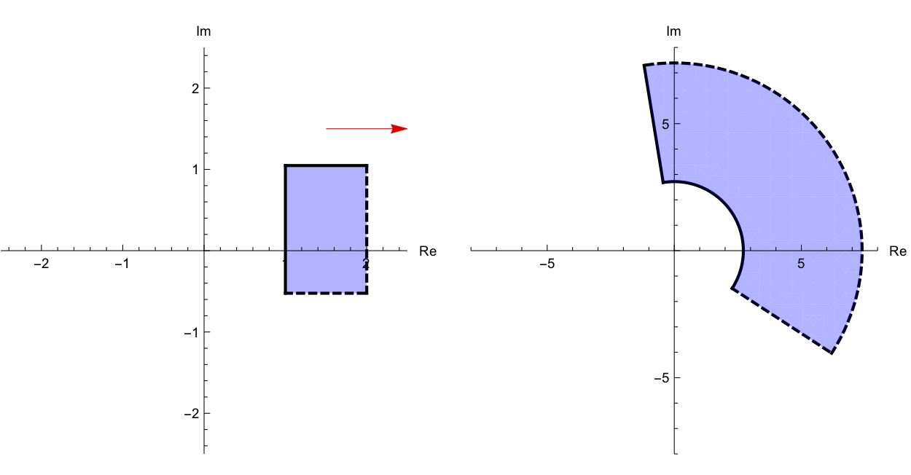

We have already hinted at one function of a complex number, but we haven't really thought about it very deeply. So far in general we have only looked at real-valued functions of a real variable. \(f:\mathbb{R}\rightarrow \mathbb{R}\text{.}\)
We often use a graphical way of describing such a function using the curve \(y=f(x)\) in the \((x,y)\) plane, which says that for each ordered pair \((x,y)\) such that \(y=f(x)\) there is a point. In fact this doesn't need to give a curve, as it could just be a discrete set of points, but generally it will be a curve.
Can we do the same thing for a function of the form \(f:\mathbb{C}\rightarrow\mathbb{C}\text{?}\) We would need to find points \((z,w)\) such that \(w=f(z)\) but both \(z\) and \(w\) are complex numbers which can only be denoted by two real numbers. ie. \(z=a+bi\) and \(w=c+di\text{.}\) So really we need four real numbers \((a,b,c,d)\text{,}\) such that \(c+di=f(a+bi)\text{.}\) So we need four axes? Well, that's not going to work with our simple two dimensional paper!
Instead of this, we write down two versions of the complex plane, one for \(z\) and one for \(w\text{.}\) We then draw on some set of points on the \(z\) plane and ask where those points go to under the map. The points we chose may be discrete points, or they may be a curve.

Figure2.8.1. The mapping of a set \(S\) to \(f(S)\text{,}\) the image of set \(S\) under the mapping \(f\text{.}\)
We already saw one example of this in the section where we were asking about the multiplicative inverse of a complex number where \(f(z)=1/z\text{.}\) We will see another example in a little bit.
Subsection2.8.1The Complex Exponential Function
Here we are going to get onto slightly more advanced functions of complex numbers. Up to now we can perform all the basic arithmetic operations on them. and can describe them in a number of ways. We can also take powers of them. We are going to go one step further and ask if we can exponentiate them.
It's pretty clear what taking a power of a complex number means once you understand multiplication: \((1+2i)^5\) is just \((1+2i)\) multiplied by itself five times. What about \(e^(1+2i)\text{?}\) Well, that means taking the number \(e\) and multiplying it by itself \((1+2i)\) times.....erm, ok! That doesn't make much sense, does it?
Well, we are going to see that we can define complex exponentiation without needing to understand what it means to multiply something by itself that many times.
The way we are going to define this is to go back to our Maclaurin polynomial definition and just assume that we can extend this to complex numbers. That seems pretty risky, but it will reap some rich rewards. In fact one has to be really careful about when and how you can do this, and we aren't able to go that far here, but if you want to do everything really correctly you do have to worry about such things.
We need to remember three things. Recall the MacLaurin polynomial for \(e^x\) where \(x \in \mathbb{R}\text{:}\)
In order to take the Maclaurin polynomial for \(e^{iy}\) we are going to do nothing more than replacing \(x\) with \(iy\) where \(y\in\mathbb{R}\text{:}\)
But hang on a moment, we should recognise this from the Maclaurin polynomials of \(\cos x\) and \(\sin x\) that we wrote above. Remember that \(y\) is a real number, so
But this is truly remarkable! Let's step back and see what we have just discovered. Apparently the exponential of an imaginary number (not fully complex yet) is taken by calculating the basic trig functions on the imaginary part of that number. You definitely couldn't plug \(e^{3i}\) into a basic calculator (ok, you could on a more complicated one), and so had I asked you what \(e^{3i}\) was you wouldn't be able to point to where it is in the complex plane. However, you can definitely calculate \(\cos 3\) and \(\sin 3\text{,}\) and these are just the real and imaginary parts of \(e^{3i}\) so you can now point out where it is in the complex plane....go on, do it.
What we have just found is that there is an intimate connection between expoential functions and trigonometric functions and that connection is something to do with complex numbers. You never would have expected them to have anything to do with each other. \(e\) shows up when thinking about differentiation and integration. Trig functions show up when thinking about circles. This is really beautiful and it was all made possible by Maclaurin polynomials.
Ok, so we can actually go a bit further than this. Here we have only looked at the exponential of an imaginary number. What about a fully complex number (with a real and imaginary part.
Well, in fact for both of these, because we haven't been completely sure that we can use the Maclaurin polynomial of a real number on an imaginary number, we are just going to make these definitions and then see what the consequences are:
Definition2.8.2. Euler's formula and the complex exponential function.
A special case of Euler's formula (when \(y=\pi\)) is called Euler's Identity and is considered by many as the most beautiful equations in mathematics:
\begin{equation*}
e^{i\pi}+1=0
\end{equation*}
Many people think of Euler's formula as the most beautiful formula in all of mathematics as it involves five numbers from very different spheres of the number realm. Why should \(e\) and \(\pi\) and \(i\) and integer values 0 and 1 have anything to do with each other? In fact when you understand the formula it is really obvious, but without understand complex numbers it makes no sense at all.
This relationship between exponential and trig functions allows us to write the modulus argument form in an even simpler way than before:
For a non-zero complex number, the modulus-argument form i.e. \(z=|z|(\cos{\theta}+i\sin{\theta})\) can now be conveniently written as:
We need to get a bit of a feel for what the exponential of a complex number will be. Here is a useful exercise:
Take a sheet of paper and draw a line down the middle horizontally.
In the top half draw a copy of the complex plane, with both real and imaginary values ranging from -2 to 2.
Randomly draw some points in the plane in positions that you can estimate the actual value of the complex number (ie. one of them might be at 1.5-0.5i. Draw some along the axes, and some not on the axes. Maybe draw 10 points.
For each of these calculate the exponential using the formula above.
Now draw another copy of the complex plane in the bottom half of the page.
Plot the positions of the exponentials of the complex numbers that you had in the top half - ie. the answers you found when you calculated the exponential of the first points.
See if you can see any pattern that is emerging. Do you see any periodicity? Do you see what makes the exponential smaller or larger, or in different positions in the complex plane?
In the following we do this not for a series of discrete points, but for a series of lines. See if you can figure out which red lines on the left are mapped to which red lines on the right and blue lines to blue lines under the complex exponential function.

Figure2.8.3. The complex plane mapped under the exponential function
One really important point to note here is that infinite lines get mapped to circles. This you might have guessed by the way the exponential function is really trigonometric in disguise, and is thus periodic. This means that it's not invertible. It's many to one (just as for \(\cos\) and \(\sin\)).
As we have done before, once we write down a definition we can explore its properties. We will list these but each of them can be proved.
Proposition2.8.4. Properties of the complex exponential function.
If \(z_1,z_2\) and \(z=x+iy\) are complex numbers, and \(n,k \in \mathbb{Z}\) then,
\(e^{z_1}e^{z_2}=e^{z_1+z_2}\)
\(e^{z_1-z_2}=\dfrac{e^{z_1}}{e^{z_2}}\)
\((e^z)^n=e^{zn}\)
\(arg(e^z)=y+2\pi n\)
\(|e^z|=e^x\)
If \(e^z=1\) then \(z=2\pi ki\)
If \(e^{z_1}=e^{z_2}\) then \(z_1-z_2=2k\pi i\)
\(e^{z+2\pi i n}=e^z\)
Remark: Property 5.1(h) tells us that \(f(z)=e^z\) is a periodic function with period \(2\pi i\text{.}\) This implies that \(f(z)=e^z\) has no inverse function, unless we restrict the domain of \(f(z)\text{,}\) in this course, we will not define the complex logarithm function, you'll see the function in MAM3000W if you take complex analysis.
We will prove properties 5.1(a) and 5.1(e) leave the rest for homework exercises.
Property 5.1(a) proof: Let \(z_1=x_1+iy_1\) and \(z_2=x_2+iy_2\) where \(x_1,x_2,y_1,y_2 \in \mathbb{R}\text{.}\)
Solve for \(z \in \mathbb{C}\) and plot all the solutions on an Argand diagram:
\(e^z=\sqrt{3}+i\)
\(e^{iz}=1+\sqrt{3}i\)
\(e^z=|1+\sqrt{3}i|\)
Sketch the image of set \(S\) under the mapping \(f\) if: \(f(z)=e^z\) and \(S=\{ z \in \mathbb{C}|\ 1\leq Re(z)\lt 2 ,\ -\dfrac{\pi}{6}\lt Im(z)\leq \dfrac{\pi}{3} \}\)
Figure2.8.6. (i): Blue, (ii): Green, (iii): Red. These are a subset of the infinite families of solutions.
We are here given a set \(S\) which is some region in the complex plane, and we are asked what happens to this set of numbers when we apply the exponential function to them. Let's start by drawing the original set:

Figure2.8.7. The question is what do the points in this region get mapped to under the exponential function? We can start with something slightly simpler than the whole region. Let's just take the left, vertical side of the region. This set could be denoted as
ie. these are numbers of the form \(z=1+i b\) where \(-\frac{1}{\sqrt{3}}\lt b\le \sqrt{3}\}\text{.}\) What happens to these when we exponentiate them? Well, they become:
These are numbers with modulus \(e\) and argument \(b\) where \(-\frac{1}{\sqrt{3}}\lt b\le \sqrt{3}\}\text{.}\) This corresponds to an arc of radius \(e\) sweeping out the range of angles given by \(b\text{.}\) It looks like:

Figure2.8.8. The left-most vertical line gets mapped to an arc of radius \(e\text{.}\) We could do exactly the same thing with the outer vertical line and this would give the same thing, except it would have radius \(e^2\text{:}\)

Figure2.8.9. The right-most vertical line (which is not actually included in the region) gets mapped to an arc of radius \(e^2\text{.}\) How about the top sloping line in the original region? This is the set of points:
This is a set of numbers with modulus \(e^a\) where \(1\le a\lt 2\) and with constant argument given by \(\sqrt{3}\text{.}\) This gives the new line in the following:

Figure2.8.10. The top line gets mapped to the new line here And finally for the lower horizontal line we do the same thing as above and come to:

Figure2.8.11. All four sides of the region are now mapped. Convince yourselves at this stage that in fact any point in the middle of the original set will be mapped to a point inside this new region. Thus we have:

Figure2.8.12. and the interior of the region is also mapped.
\item Prove the following properties of the complex argument:
(i) \(Arg(z_1z_2)=Arg(z_1)+Arg(z_2)\) (ii) \(Arg(z_1\overline{z_2})=Arg(z_1)-Arg(z_2)\)
\item Show that:
(i) \(e^{z+\pi i} =-e^z\) (ii) \(\overline{e^z}=e^{\overline{z}}\)
\item If \(\alpha\) is an argument of \(w\) and \(\beta\) is an argument of \(z\) (where both \(w\) and \(z\) are complex numbers, find the argument of \(\dfrac{w^2z}{\overline{w}}\) if possible.
\item If \(Arg((a + i)^3) =\pi\) , where \(a\) is real and positive, find the exact value of \(a\text{.}\)
\item Write the following complex numbers in a cartesian form i.e. form \(a+bi\)
I know how to write a complex number \(z=a+bi\) in a complex exponential form.
I know all the three forms of a complex number, and I am comfortable with changing a form of a complex number from one form to another.
I can prove all the properties of the complex exponential function.
I know that \(e^z\) is a periodic function that is not one-to-one, and therefore doesn't have an inverse, preventing me from taking a logarithm of a complex number.
For a given complex number \(w\text{,}\) I know how to find all the complex numbers \(z\) that satisfy the equation \(e^z=w\text{.}\)
I know how to sketch the solutions of the equation \(e^z=w\) where \(w\) is a given complex number.
I know how to map a set of complex numbers under the function \(f(z)=e^z\text{.}\)
Subsection2.8.2Complex trigonometric functions
ok, so now you can calculate where in the complex plane a number like \(e^{-2+3i}\) is by writing this in terms of trig functions:
and all the stuff on the right you can calculate very easily on even the simplest of calculators.
How about \(\cos(-2+3i)\text{.}\) What is this? Where does it sit in the complex plane? Well, you certainly can't type this into a basic calculator. How can we work out trig functions applied to complex numbers? Well, we're going to use some clever footwork and take advantage of what we did in the previous steps. Here it is:
We use the equations above as a motivation for the definitions that follow.
Definition2.8.15. The complex trigonometric function.
Given any complex number \(z\text{,}\) we define :
\(\sin{z}=\dfrac{e^{iz}-e^{-iz}}{2i}\) and \(\cos{z}=\dfrac{e^{iz}+e^{-iz}}{2}\)
Remark: One big difference between real and complex trigonometric functions is that real sine and cosine functions are bounded between -1 and 1, while the complex functions are not bounded if they are defined over the set of all complex numbers (see examples that follow).
So, how could we use this to calculate \(\cos(-2+3i)\text{?}\)
and all of this can be calculated on a basic calculator. It looked like quite a lot of work, but the steps are all pretty simple. This means that you can now calculate the \(\sin\) and \(\cos\) of any complex number you want and know where it sits in the complex plane.
This is not going to be the only time you will see "trigonometric functions" related to exponential functions. You'll come across (if you haven't already) hyperbolic functions whose definitions resemble those of the complex trigonometric functions. The most common hyperbolic functions are the hyperbolic sine, denoted \(\sinh\text{,}\) and the hyperbolic cosine, denoted \(\cosh\text{,}\) defined by:
Hyperbolic functions may not be periodic functions as are the trigonometric functions; but many identities involving hyperbolic functions are quite similar to those for the corresponding trigonometric functions, as suggested by the names.
The following identities remain valid and can be proved using definition 5.2 and properties of the exponential function. Proofs are left to the Check Your Understanding exercises.
Proposition2.8.16. Properties of the complex trigonometric functions.
If \(z\) is complex numbers, then:
\(\sin{(z+2\pi)}=\sin{z}\text{,}\) and \(\cos{(z+2\pi)}=\cos{z}\)
\(\sin{(-z)}=-\sin{z}\) , and \(\cos{(-z)}=\cos{z}\)
\(\sin{2z}=2\sin{z}\cos{z}\) , and \(\cos{2z}=\cos^2{z}-\sin^2{z}\)
\(\sin^2{z}+\cos^2{z}=1\)
Remark: Property 5.2 (a) tells us that \(\sin{z}\) and \(\cos{z}\) are both periodic with period \(2\pi\text{.}\) This also tells us that \(\sin{z}\) and \(\cos{z}\) are not one-to-one functions, preventing them from have inverse functions.
Let \(w=e^{iz}\) so that we have a quadratic in \(w\text{:}\)
\begin{equation*}
w^2-4w+1=0
\end{equation*}
Complete the square:
\begin{equation*}
(w-2)^2-3=0
\end{equation*}
Solve the quadratic:
\begin{equation*}
w=2\pm\sqrt{3}
\end{equation*}
Check that both of these solutions are positive (we have to do something slightly different if they're not.
Now replace the \(w\) with \(e^{iz}\text{.}\) Let \(z=a+bi\implies e^{iz}=e^{-b}e^{ia}\text{,}\) and write the right hand side in complex exponential form:
\begin{equation*}
e^{-b}e^{ia}=2\pm \sqrt{3}e^{2\pi i k}\, ,\,\,\, k\in\mathbb{Z}
\end{equation*}
Match the modulus and argument of both sides:
\begin{equation*}
e^{-b}=2\pm \sqrt{3}\implies b=-\ln(2\pm\sqrt{3})\, ,\,\,\, a=2\pi k
\end{equation*}
Write \(z\) in terms of these \(a\) and \(b\) that you've just found:
Here are two complex roots. We have to write them in modulus argument form. Their modulus is \(2\pm\sqrt{3}\) and their argument is \(\frac{\pi}{2}+2\pi k\text{,}\) \(k\in\mathbb{Z}\text{.}\) So again writing everything back in terms of \(z=a+bi\) we have:
\begin{equation*}
e^{-b}e^{ia}=(2\pm\sqrt{3})e^{\frac{\pi}{2} i+2\pi k i}
\end{equation*}